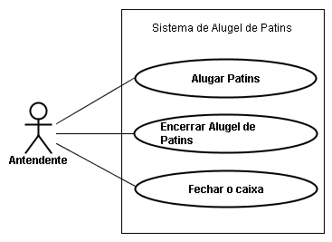
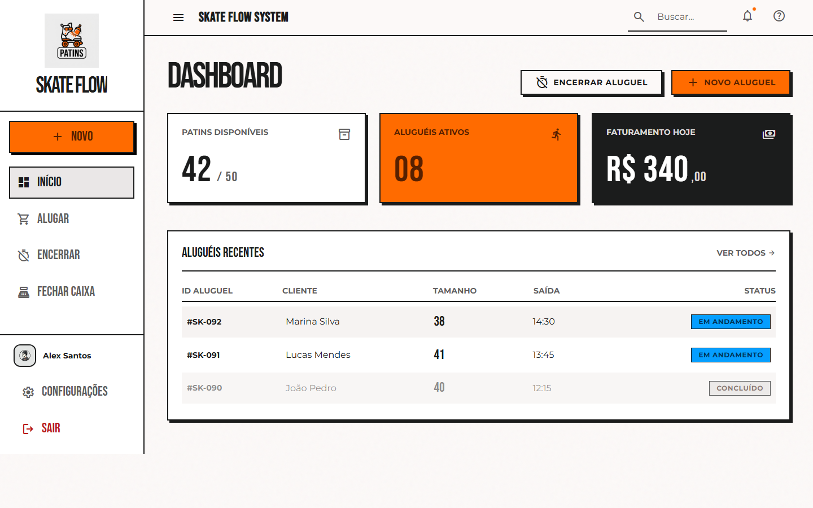
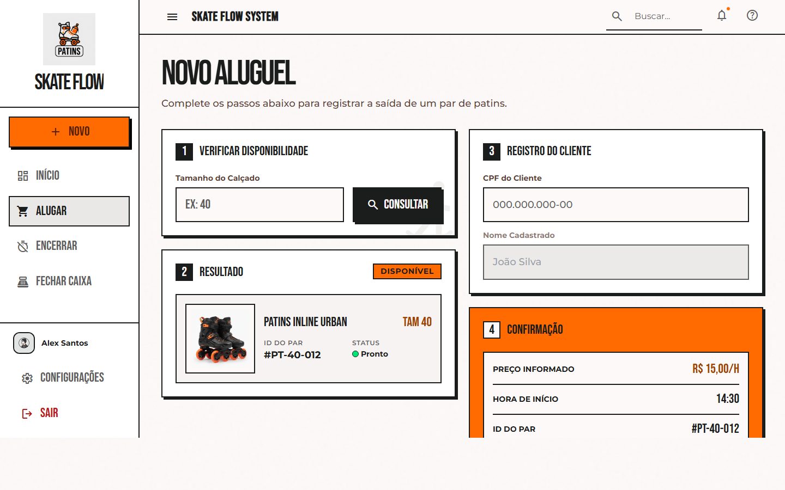
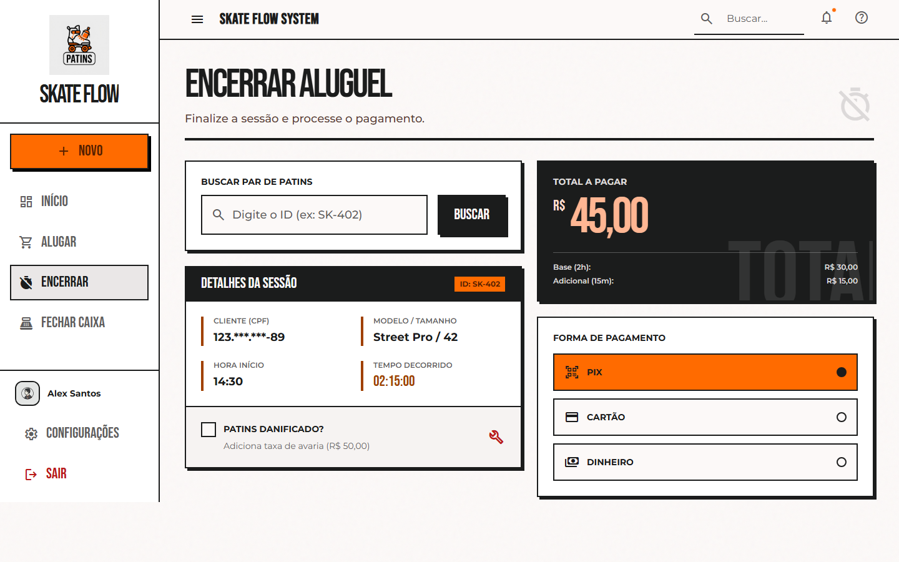
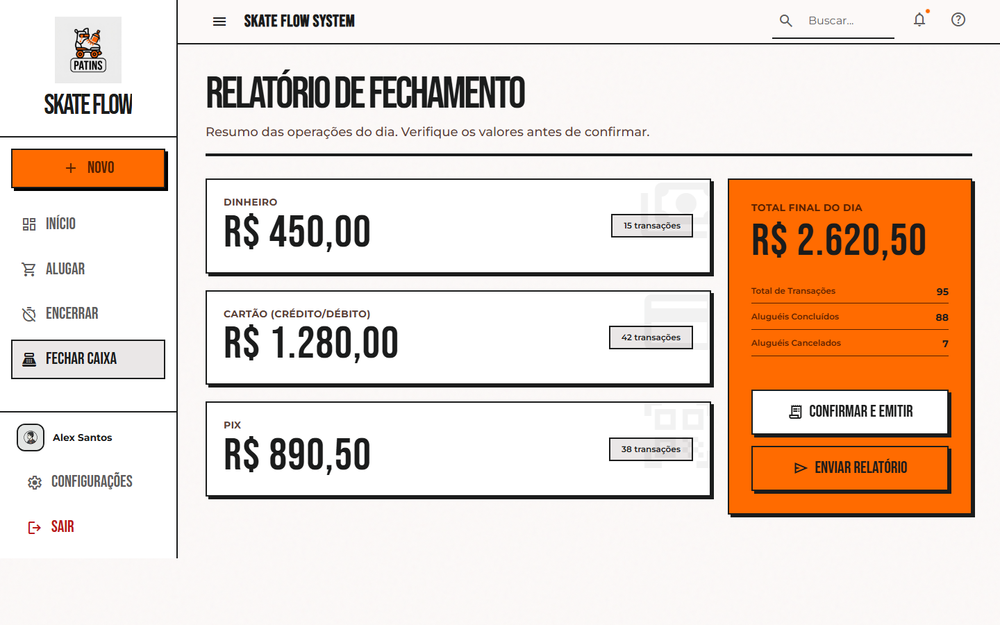
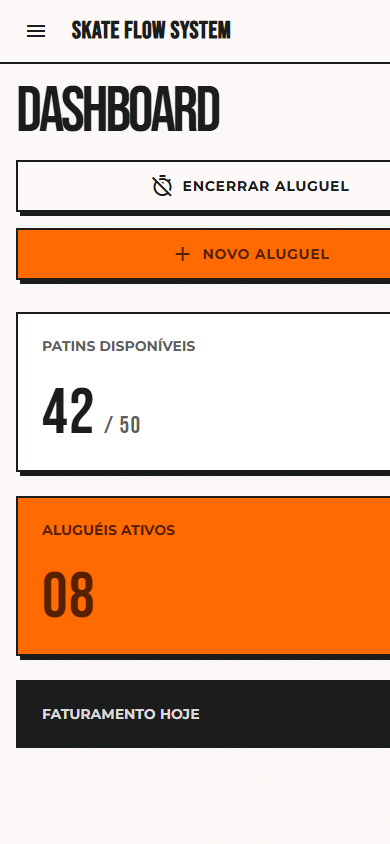

Projeto de interface · Empresa de aluguel de patins
Erick Lopes dos Santos Carvalho · Yuri
Prof. Chessman Kennedy Faria Corrêa · 04/09/2026
Três casos de uso. Uma interface para o atendente. Sem ficha de papel.
Projetar a interface do sistema — não o banco, não o backend. A tela é o que o usuário percebe como o sistema.
O expediente inteiro passa por essa tela. Tem que ser rápida no pico, não “bonita só no print”.
Modelo mental = ficha de papel. Vocabulário da loja: tamanho, CPF, par, caixa.
Estresse moderado/alto. Botões grandes, poucos passos, reconhecer em vez de decorar.
Cliente e proprietário ficam fora da GUI: um fala com o atendente; o outro recebe o relatório.

Consultar tamanho, informar preço, gravar CPF + par + hora.
Buscar o par, calcular, dano, pagamento, confirmar.
Totais por forma, conferir, emitir e enviar o relatório.
Mesmo menu, mesmos botões, mesmo layout nas três tarefas.
Palavra da loja. Zero jargão de programação.
Uma página por caso de uso. Atalho “Novo” sempre à esquerda.
Nada grava sozinho. O atendente confirma.
Dano é opcional e o total volta se desmarcar.
O balcão manda mais que o aparato técnico.


Se não houver par: o resultado vira indisponível e o caso de uso acaba (fluxo 4a).


Contraste alto · rótulo + cor no status · botões grandes · label nos campos · lang="pt-BR" · o mesmo fluxo no celular/tablet.

Tamanho 40 → consultar → CPF → mostrar o preço → gravar.
ID SK-402 → marcar dano e ver o total subir → PIX → confirmar.
Mostrar as três formas, o total e os dois botões do relatório.
Enquanto um navega, o outro narra o caso de uso. Não abrir Configurações nem a busca do topo — são casca do protótipo.
Três casos de uso · princípios da Unidade 1 · interface para quem está no balcão.
Erick Lopes · Yuri
Perguntas
Combinem antes: Pessoa A abre e fecha; Pessoa B mostra as telas. No Meet, um compartilha a tela do protótipo + este PDF.
| Min | Quem | O que falar / fazer |
|---|---|---|
| 0:00 | A | Capa: nomes, Trabalho 02, “projetamos a interface do atendente da loja de patins”. |
| 0:30 | A | Problema: hoje é ficha de papel; erro de soma e fila no balcão. O exercício é a interface, não o servidor. |
| 1:20 | A | Usuário: só o atendente. Uso obrigatório, cliente na frente, pouco treino. Modelo mental = ficha. |
| 2:10 | A | Três casos de uso do diagrama. Início é só painel do dia. |
| 2:50 | B | Princípios: consistência, clareza, eficiência, controle, perdoar. Citar Cap. IX se o professor perguntar “por quê”. |
| 3:30 | B | Passar Alugar / Encerrar / Caixa. Em Encerrar, clicar o dano para o total mudar. |
| 6:00 | A | Acessibilidade: contraste, rótulo+cor, alvos grandes, mobile. |
| 6:40 | A+B | Demo de 1 minuto se ainda não mostrou o HTML. Fechar: “o papel sai, o atendimento fica”. Perguntas. |
Abertura. “Somos Erick e Yuri. O Trabalho 02 pede o projeto de interface da empresa de aluguel de patins. A gente trata a tela como o sistema que o atendente vê — igual a Unidade 1.”
Problema. “Hoje tudo é ficha: tamanho, CPF, hora, dano, forma de pagamento e o fechamento do dia. Dá para automatizar a consulta, o cálculo e o relatório. Entregar o par e conferir o dinheiro continuam com a pessoa.”
Usuário. “O ator é só o atendente. Ele já sabe a tarefa, mas o software é novo. Por isso copiamos o vocabulário da loja e deixamos os passos visíveis. Reconhecer é mais fácil do que relembrar — isso está na aula de memória.”
Casos de uso. “Alugar, Encerrar e Fechar o caixa. O Início só mostra o expediente para não caçar ficha.”
Acessibilidade. “Contraste alto, texto além da cor, botões grandes, campos com rótulo, e o fluxo cabe no tablet do balcão.”
Fecho. “A interface cobre os três casos de uso e as atividades amarelas dos processos. O papel sai da mesa; o diálogo com o cliente fica.”
Princípios. “Usamos o Capítulo IX. Consistência: a casca não muda. Clareza: nenhuma palavra de TI. Eficiência: um caso de uso, uma página. Controle: o atendente que grava. Perdoar: o dano pode desmarcar e o total volta.”
Alugar. “Quatro passos. Consulta o tamanho, vê o par, pede o CPF, mostra o preço da hora e grava. Se não tiver o número, o resultado fica indisponível e o caso de uso acaba — fluxo 4a.”
Encerrar. “O sistema pede o ID, mostra a sessão e o total. Se o patins veio danificado, marca aqui: entram R$ 50 e o total atualiza na hora. Depois escolhe PIX, cartão ou dinheiro e confirma.”
Caixa. “Dinheiro, cartão e PIX separados, total do dia, confirmar e emitir, enviar ao proprietário. O atendente ainda confere o físico; o sistema só deixa de somar no papel.”
Se perguntarem “funciona de verdade?” “É protótipo de alta fidelidade do Trabalho 02. Os fluxos e os estados estão na interface; persistência e login ficam para a implementação.”
Se perguntarem o nome Skate Flow. “É a marca do produto da loja de patins. O domínio do enunciado — par, tamanho, CPF, caixa — permanece.”